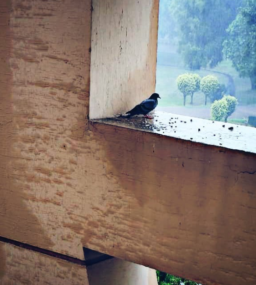

As the doors are about to close, I thought why not write an article to imprint the memories into a paper rather than mind that already is caring too much of the burden of existing. Truth be told, in my 4 years of journey, I got everything except biotechnology hahah. To make matter worst, I lost my interest as well. It ain’t like that degree is inherently bad, or something. The problem is, progress in Biotech sector is extremely retarded, slow, and efficient, and requires Ph.D. to be considered a worthy expert. It is a worthy path, but a long one. Fortunately, I have always been very lucky in academics, and capabilities.
It was the first time, I was about to leave my home in DG Khan, my parents for university of Gujrat. I won’t confess that I loved my birthplace. Contrarily, I was eager to leave the city. Regardless, leaving parents was a headache a bit as I was a bit too sensitive. First year passed by with hostel crisis, faculty dictatorships, back and forth in class for impressing the cheeks (both girls & boys alike). In the mid of my first year, society president visited our class to introduce us about HSBB, and that is where my society journey began. In the later part of the year, I contributed to society by first introducing the public speaking initiative, but I hid myself behind the curtain, and didn’t even attend the first opening speech. This year mostly revolved around adjusting myself to new environment. I was nobody in my class, just a mysterious aura.
In that year, my family moved to Gujrat. Thus, I left the hostel and settled in Gujrat. This is the year where things start. Beginning of 3rd semester, was somewhat disappointing. I lost my elections. Later was offered the News Editor Head position leading the group of 10 students all from 7th and 5th semester. That was tough at first but got through it. Unka shukriya jinho ne bardasht kiya xD. Alongside, I made multiple efforts to change the way, department operates and worked alongside trusted friend. Class relation improved, a bit dominance at the end of the year.
This is the year where I was offered the Associate Editor position but left the HSBB magazine wing. However, to our dismay. That unit was permanently shut down after my withdrawal. I sometimes feel guilty for that shut down. At the start, I founded my own society named SciBiz. However, to make things shady, I made another one the frontman that later resulted a ruthless betrayal that I still am unable to fathom. I was able to directly dominate, and influence the class, relation satisfactory.
That is the year, I actually sidelined myself from everything. Almost zero contribution in anything, neither attended any events happening in university. Almost bunked every class. Got myself busy with other multiple goals. Once, I was walking and someone came to me for promoting the event, which I replied saying;
I have complicated past with these things.
Personally, I never liked my department in any way. When I first entered society, I thought the faculty is the problem, later thought the students are. Ironically, both were the problems. Implication is, there is no representative for the student body, thus there can’t be any solution. My department mates view faculty as something divine, sacred, and see the students from the faculty’s eyes. How can there be any dialogue when one party does not even have a representative. One example that literally sucked was the text from someone:
Faculty is highly trained and levelheaded. Wo bahut mehnat kerte hen lekin hmara utana level nai he ke hm unki bato ko smjh skenMost of the people in our department are somewhat insecure, frustrated, and are just emotionally suffocating. Almost everyone I met was at the verge of emotional breakdown. Happy fools and liars lying to themselves. In department, almost 12 people broke down into tears. They were burning with many things. I did not do anything. I was just curious to listen, non-judgmental, and knew how to pave path straight into the heart. Share the burden. There is nothing wrong with showing your vulnerable side. It is completely fine. This is what makes us human after all.
My class has some fine individuals. The only problem I always had with them was because of almost no contribution in department activities. They literally did not care about anything besides there small friend circles. Never really tried to escape their comfort zone. Worst, they never did stand for something injustice.
I met some amazing people throughout the journey. One was Ali, that graduated in Psychology last year. Another was Sufyan from Chemistry, also graduated last year. This man was the president of Chemist Society, and was alongside me when my SciBiz betrayal came. Another was Faizan from CS, a techi guy who is too much calculated. Not to forget the only bestie, Daniyal. I also met amazing females however would avoid to mention. Some impacted my journey more than anyone else.
When I started my university life, I had a pledge to never fall. It ain’t like, I think bad of it. It was just I didn’t want to indulge in it. I consider haya the most magnificent thing whether in man or woman. However, if one ever fall, the most beautiful thing is to confess in the suitable moment, and just avoid useless relationships that has dead ends. Protect yourself, and the other one as well.
Leading seniors, impacting department, influence in other departments, establishing SciBiz. These are the things that will last. My impact ain’t roaring, rather a subtle wave motion that can only be felt, never heard or seen.
I have a lot of regrets mainly leaving things halfway. I left the HSBB Magazine Wing halfway, left the SciBiz halfway. Worked on R model to devise some strategies but left it halfway. Created department technical survey but left it halfway. Was advised to work in HSBB behind the doors, but didn’t accept it. Once was told by HOD;
Saad tumhari msla ye he ke tumhari ksi se ikhtlaf ho tum larte nai ho chor ke chle jate ho.Door slammed people just because my trust was shattered. I sometimes feel, I could have done something meaningful, but I didn’t intentionally. There were things I didn’t do.
I got everything that I wanted from a university life. I won’t regret it. However, like every other chapter which I have lived, and never opened it again. This chapter too shall follow the same trajectory and reach its eternal slumber. Someone said to me.
Saad Jo agli bahar hogi wo UOG me nai kahi aur khile gi. Kunke ye bagh ab khiza ka adi hua chahta he← Back to Home